fotWograf Stereoscopic Images
An 'anaglyph' image requires red-and-blue-lensed spectacles to view;
A L-R-L style stereo image allows two different viewing forms in the one picture - 'parallel' and 'cross-view'.
To view parallel, look at the left-and-middle images, while cross-view (or 'cross-eyed') can be seen by viewing the middle-and-right images.
[ more on Wikipedia ]
fotiMono Images
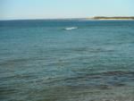
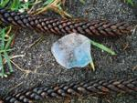
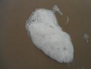
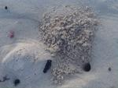
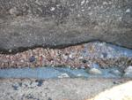
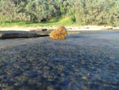
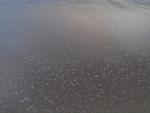
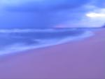
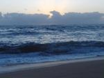
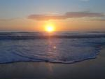
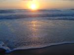
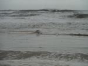
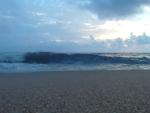
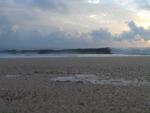
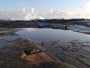
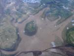
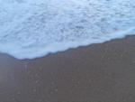
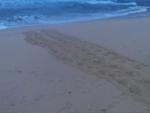
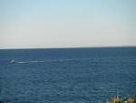
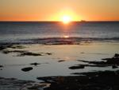
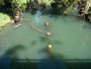
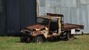
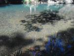
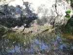
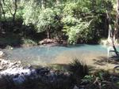
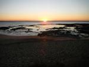
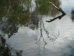
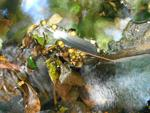
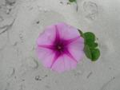
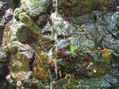
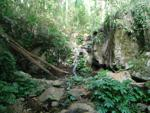
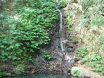
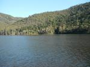
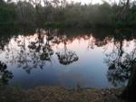
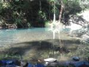
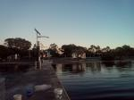

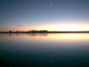
_20131010-130645_CC0.jpg)
CC-BY images, for use with acknowledgement :-)
[ or, just as wallpapers ! ]